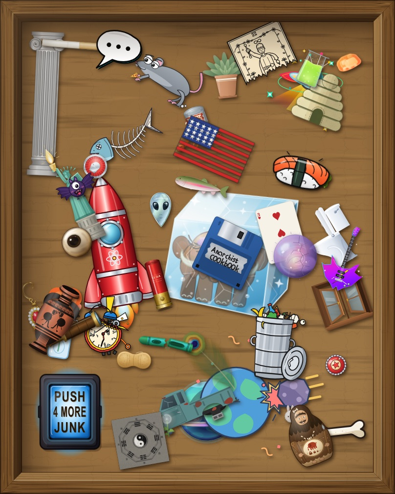

Junk Drawer Bench
One prompt. Two models. Blind grades, on the record.
49 prompts · 200 drawings · 4 models · 2026
Every object in the drawer is an SVG drawn by a large language model — given a prompt verbatim, one shot, and taken at its word. What lands in the drawer is exactly the code the model wrote, imperfections intact. Each drawing is graded blind on the rubric below before the model’s name comes off, and the record keeps the model, the version, the tokens and the cost. Press PUSH 4 MORE JUNK to take a turn: two models draw your prompt and you grade them the same way.
The Numbers
What a drawing costs
Overall grade
The four axes
Understanding Assignment
Structural Coherence
Layering
Je ne sais quoi
as of 2026-09-13 · one rater · counts derive from the data
How to Read the Grades
PrimeExceptional. Faithful to the prompt, technically clean, aesthetically strong. Would ship as-is.
ChoiceStrong result with minor blemishes a careful eye can find.
SelectCompetent and recognizable; noticeable flaws on one or more axes.
StandardGets the idea across despite significant defects.
UtilityThe lowest tier. Barely fit for purpose; kept for the record (and the comedy).
The Axes
Understanding AssignmentDid the model grasp the brief — each explicit ask, the evident intent behind it, and the brief's negative space? Prompts underspecify and filling the gaps is the job; additions are charged here only when they crowd, contradict, or upstage what was asked. Judged on what it TRIED to draw; whether the drawing itself holds up belongs to the axes below.
Structural CoherenceErrors of the object: parts attach, anatomy is possible, proportions and viewpoint stay self-consistent. If fixing it means redrawing geometry, it lands here.
LayeringErrors of the picture: stacking order and occlusion as rendered, fill, stroke and gradient work, framing and use of the canvas. The test — if it could be fixed without moving a single path (reorder, repaint, reframe), it lands here.
Je ne sais quoiThe intangible — whatever makes a piece more than the sum of its axes. Not captured elsewhere; graded anyway.